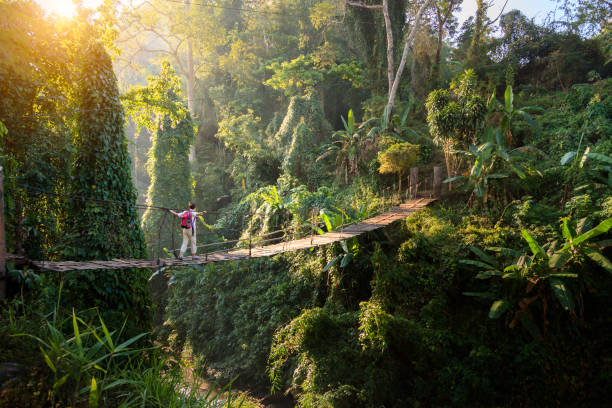
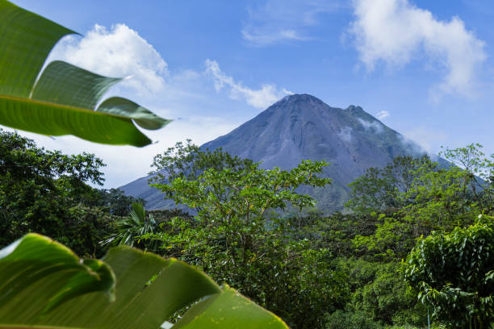
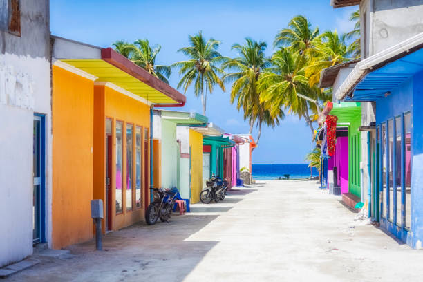
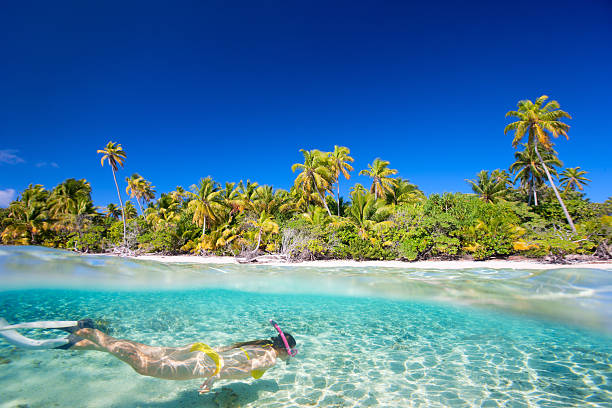
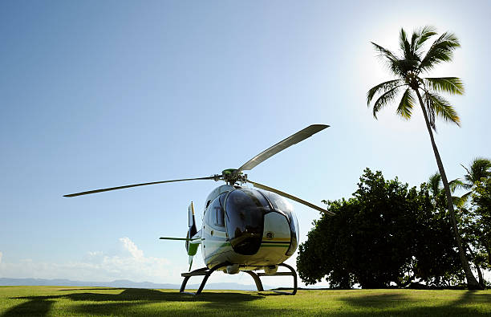
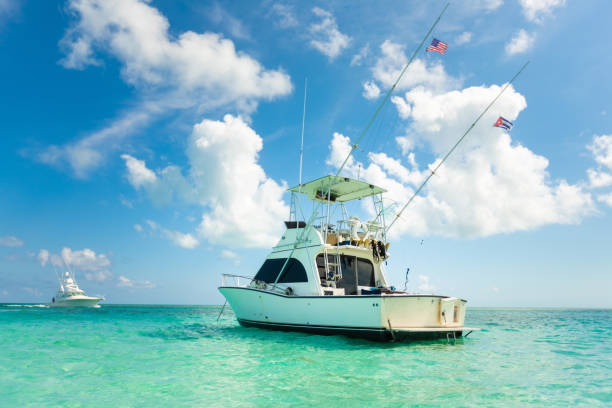
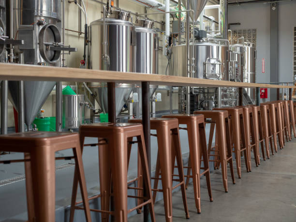
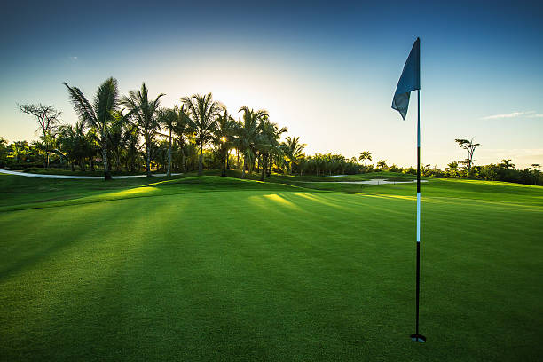

Most people visit Taniti to enjoy the beaches, snorkeling, zip-lining and hikes exploring the rainforest, and to visit the volcano. Tourists spend most of their time in Taniti City, which boasts native architecture and nearby white, sandy beaches that encircle Yellow Leaf Bay. Other popular activities include boat or bus tours of the island, or visits to Taniti’s active volcano.
Rainforest Trails
View the Volcano
Explore the City
Snorkling
However, there are other things to do, including visiting a local history museum, going on chartered fishing tours, visiting several pubs, including a microbrewery, dancing at a new dance club, seeing a movie, taking helicopter rides, playing at an arcade, visiting art galleries, and bowling. Also, a nine-hole golf course should be operational by next year. Many of these activities are located in Merriton Landing, which is a rapidly developing area on the north side of Yellow Leaf Bay.
Birds Eye View - See the island from the air
Fish On! - Charter a private fishing boat
Bottoms Up! - Sample a craft brew
Fore! - Enjoy a round or two
Opening next year
